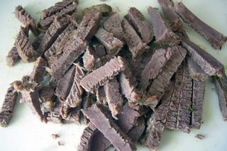
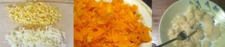
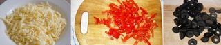
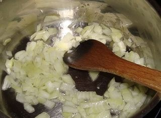
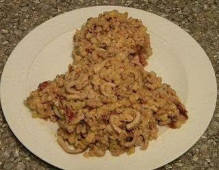

Шаг 1: Подготавливаем ингредиенты.

Практически все ингредиенты этого салата нам потребуются в варёном виде. Поэтому наполняем кастрюли водой и ставим на плиту. Варим говяжье филе отдельно в подсоленной воде, до готовности. Если мясо свежее, то для варки потребуется примерно 40 минут. Если же замороженное - то 1,5 часа. Также время варения говядины зависит от "возраста" мяса, если оно молодое, то будет готово быстрее. Появляющуюся серую или белую пену нужно обязательно снимать, а лучше первый бульон слить совсем, чтобы избавиться от вредных веществ, содержащихся в мясе. Чем чище получившийся бульон, тем лучше. Отварное мясо мягкое и легко протыкается ножом, а значит нарезать его небольшими кусочками - дело 5 минут.

Яйца, морковь и картофель можно варить в одной кастрюле, только овощи для начала промойте проточной водой. Готовый продукты охлаждаем, очищаем от скорлупы и кожуры, и измельчаем следующим образом: яйца разделяем на желтки и белки и трём на мелкой тёрке по отдельности, морковь трём на крупной тёрке, а картофель разминаем ложкой или режем мелкими кусочками.

Сыр трём на тёрке, а болгарский перец режем кубиками, предварительно удалив из него седцевину с семечками. Отложите пару кусочков для оформления салата. Из банки с маслинами сливаем сок, а из маслин удаляем косточки, если они не удалены изначально.

Лук шинкуем и обжариваем на сковороде до прозрачного цвета, а затем добавляем столовую ложку воды и пассеруем 10 минут.
Шаг 2: Готовим салат "Пингвинёнок".

Для этого нам потребуется плоский широкий салатник. На него мы будем выкладывать слоями ингредиенты салата, придавая им форму пингвина. Начнём с мятой картошки, посолим по вкусу и смажем слой майонезом. Так будем поступать с каждым слоем салата. Только не пересолите! Затем выкладываем слой измельчённого мяса, пассерованного лука, желтков, тёртой моркови, тёртого сыра, а завершаем - тёртыми белками, которые будут изображать белые пятна на коже пингвина.